DEMO · 2026.10.25
Codex 专家策略执行：抓杯—搬运—放置—释放
完整 G1 在自有生成场景中执行任务，身体由 SONIC 控制，双手使用原生 PD；本例完整任务通过。
本例为原场景局部目标条件验证；“四项进展”中两个生成布局的结果来自另一次独立记录。下载完整视频 ↓
本阶段完成了完整 G1 的抓杯、携物行走、放置与释放，并在两个自生成布局中获得合格轨迹。同时，打通了专家读取失败证据、修订策略和独立验证的工程链路，正在推进跨物体任务。
汇报区间：2026-10-21 → 2026-10-27 · MuJoCo 仿真开发验证
完整 G1 在自有生成场景中执行任务，身体由 SONIC 控制，双手使用原生 PD；本例完整任务通过。
四项进展分别说明已完成的能力与当前边界。全部结果仍属于MuJoCo开发验证。
完整 G1 已连续完成抓杯、持杯走步、直立放置、松手收手与稳定。代表轨迹持杯移动约 0.53 米，并通过独立审计与原初态连续控制复验。
S02、S03 两个自生成布局各获得一条合格轨迹，去重后共 2 条，放置误差约 5.7 / 8.5 毫米。仍是同一杯资产与相近工位模板，尚未证明广泛泛化。
已串起证据读取、策略修订、实际仿真、独立核验和条件化经验记录。最新一轮完成 4 次真实 Codex 专家设计调用；工程闭环已跑通，产量收益仍待验证。
瓶子 S02 已完成抓持、搬运与直立落桌的阶段动作，但完整释放尚未通过；S03 仍卡在抓取建立，书本暂无完整成功。最新一轮新增去重合格轨迹为 0。
最新专家闭环轮新增去重合格轨迹为0，杯回归为已有样本；完整任务通过、局部改善和工程能力分别记录。
瓶与书尚未形成合格完整轨迹。抓取建立、稳定持物和释放交接需要按各自证据继续核对。
当前为开发验证，尚未证明稳定量产、广泛泛化或这批全身任务数据的学习收益；最新专家闭环轮新增去重合格轨迹为 0，杯回归为已有样本。
10月25日 trial_07 全任务通过，严格持杯机器人净位移约0.5336米。几何、质量、电机和PD未修改；NoSlip按声明在第3960步由0切为3，结果属于该数值设置下的仿真开发验证。
20261025 / native_sonic_body_grasp / trial_07 / FINAL_REVIEW完整42.64秒、50fps。目标Y方向相对原目标偏移−30毫米，完整任务通过。该轮同一冻结策略的3个条件均通过，实际轨迹去重后2条；不将条件数量当独立成功率，也不将视频当S02/S03布局的演示。
20261025 / codex_expert_v2 / dev010 / FINAL_VERIFICATION10月26日同一cup_v004在S02/S03从各自原初态执行，独立审计、全43控制连续复验、实际视频及数据核验通过。最终2条去重开发轨迹；共享资产与参考模板保留在同一保守来源组。
20261026 / generated_grasp_execution / FINAL_REVIEW + DATASET_MANIFEST4次真实设计调用，杯回归通过但与旧样本重复；5条瓶负例均未完成任务。最新轮新增55548物理步，新增去重合格轨迹0；未训练模型权重、未做隔离评测，不能称已验证自进化或产量收益。
20261026–27 / expert_branch1 / FINAL_REVIEW视频呈现最终策略的执行结果。dev010 复用了已核验的抓取行走前缀，后段由专家修订，另完成原初态连续控制复验；不据此声称机器人全程在线自主规划或模型权重自进化。所有当前全身任务记录保留为开发验证，尚未划入隔离测试集。
先做好高质量训练数据，再在同一场景与任务体系上加入严格隔离的测试和标准化评测。
以full-body人形机器人任务为重点，依托自有场景生成器，形成可训练、可测试、可持续改进的具身智能仿真系统。
将资产、布局、机器人执行和采集接口连接起来，积累能够复用的数据生产能力。
先做好控制、采集、质检与导出，同时保留来源身份和任务条件，为后续划分与评测做好准备。
单次任务成功是阶段成果。进一步需要验证有效多样性、人工介入和策略学习收益。
目前处于开发验证阶段。当前全身任务数据尚未形成稳定量产或来源隔离的策略学习验证。查看本期实际进展 →
每个环节都有独立的输出与判断依据。当前已在部分完整G1任务上连接生成场景、执行和质检；学习及隔离评测仍待接入验证。
资产、布局、物理与功能描述
参考动作、全身控制与实际物理
状态动作、独立审计、去重与导出
用合格示范训练并检验数据价值
固定来源划分、任务与评价标准
保留自己的场景生成主线，逐步补齐碰撞、功能区域、物性来源与全过程空间条件。
当前由代码专家提供参考，SONIC控制身体，原生手部PD执行手指参考；实际状态与参考请求分别核对。
按完整任务验收、独立复验、去重和来源记录筛选数据；训练后，再用隔离条件检验学习效果。
最终需要形成“生成—执行—采集—学习—评测”的持续改进流程。目前各部分的成熟度不同，应按实际证据分别报告。
集中展示目前有效的选择。各日期的讨论过程保留在历史归档，GRAIL相关依据保留在参考专题中。
继续使用MuJoCo，保留SONIC身体控制与原生手部PD。仿真器迁移暂缓。
沿用现有参考生成和资产主线，依据执行证据修订；资产外观、碰撞可用性与物性可信度分别判断。
保留复用微调或从零训练的候选路线，先核对基座和控制接口兼容性；视频参考尚未接入主线。
刚体、铰接体与软体接入及相邻问题已登记。完整任务验收、来源隔离与数据学习价值继续作为判断依据。
以下页面保留各自日期的实验语境。当前有效的路线见“项目路线”，最新结果见“本期汇报”。
上周主要在选方案、接控制器和检查问题；这一周，我们把控制器真正用起来，跑通了多场景行走采集和完整搬运，并让完整G1在自己生成的房间里完成了行走与停稳。离稳定生产训练数据还有距离，但已经有了可检查、可重复验证的阶段成果。
汇报区间：2026-10-14 → 2026-10-21 · 实验状态截至 10 月 21 日
3个场景，48个条件全部通过
3个起点中2个完成，1个停车失败
另外1个中止，1个尚未运行
在3个自己生成的房间中完成48条行走轨迹，打通自动执行、记录、检查和导出。此前使用简化碰撞模型，暂不代表复杂避障能力。
机器人已经能抓起物体、拿着走、停下放好，再松手撤离。当前只验证了一种轻小物体，仍使用简化本体和额外取放支架。
最新验证直接使用生成的书房，不再为旧脚本另搭测试架。已经有一个起点完成站稳、行走超过1米和停稳，其他起点还需改进。
保留原家具与布局，没有额外支撑。以下是一个通过检查的完整过程。
已经核对运动、接触与数据记录，并复验了仿真过程。目前只证明这个起点通过，尚未证明换起点也同样可靠。
换一个起点，仍可能出现行走命令被安全检查拦下、或停车位置不够准的问题。新数据还需补齐同步图像与深度，并检验是否有助于策略学习。目前仍处于开发验证阶段，尚未达到稳定量产。
按下面的顺序推进，完成前一步的验证后，再进入下一步。
解决行走中被安全检查拦下、停车不够准的问题，在同一套配置下验证多个起点。
验收：三个预定起点都能站稳、走完并停稳。把已跑通的抓取和搬运，逐步接到生成场景原来的桌子等家具上。
验收：连续完成拿起、搬运、放好和松手撤离。把机器人看到的画面与动作同步记录，再用固定的小批次检查成功率、数据完整性和采集成本。
验收：每次尝试都有完整记录，成功与失败都保留。再扩展房间和物体，用训练时没见过的条件，检查学到的策略能否完成任务。
验收：用独立测试结果判断数据有没有学习价值。3场景48条件全部通过，导出14,400个逐步样本。使用早期简化模型，尚无逐步RGB-D。
embodied_locomotion_pipeline_20261020_v1 / delivery/DELIVERY.json最终固定控制器3个起点2成功、1停车失败，导出2,426个完整搬运正例样本。
embodied_transport_continuous_20261020_v3 / FINAL_VALIDATION.json一个条件通过，一个因拟发关节目标越界而中止，第三个未运行。三条件总体目标尚未完成。
embodied_native_walk_20261021_v1 / PARTIAL_REVIEW_FINAL.json以上均为开发验证结果。行走、搬运与完整本体验证分别统计；视频是展示材料，不代替训练数据和学习效果验证。
本页记录 10 月 14 日的路线选择。最新实施结果与计划见 10 月 27 日进展 →
目标不是只生成场景，也不是让机器人偶尔成功一次，而是依托自有场景生成器，先批量生产可用于具身智能训练的全身机器人仿真数据，再建立严格隔离的测试集、评测任务与指标。最新实验已经把主要瓶颈从抓取和基础行走，定位到精确落脚、稳定停车及任务状态切换。
已有自生成室内场景、同步状态与图像采集、质量审计和训练数据读取链路。历史单臂数据可继续作为工程底座，但不能计作全身任务已经完成。
固定基座三指包络抓取最终抬升 9.155 cm，保持滑移 0.789 mm；解除基座固定后又连续静持 3.5 秒，掌杯滑移 0.893 mm，机器人没有跌倒。
已有前向稳定行走基线；持杯横移实验最大投影位移达到 20.200 cm，主动行走阶段仍保持手部接触。失败发生在到达后的回摆和停止阶段。
带杯实验曾在 20 cm 附近失稳。移除杯子和任务手臂后，隔离实验进一步证明：问题不是杯子摩擦，也不是简单缺少减速参数，而是当前侧向速度接口只有重心摆动和完整迈步两个粗粒度区间。
低指令主要引起侧向重心摆动，没有形成连续可控的侧步。
需要在目标附近完成落脚，并从行走连续切换到至少 2 秒的稳定站立。
一旦提交完整侧步，提前减速和短反向制动也无法连续调到 20 cm。
最佳短反向制动结果最终停在 32.073 cm，停车后可以保持稳定，但比目标多出 12.073 cm。结论不是“机器人不会停”，而是我们无法通过当前标量速度脉冲准确决定落脚位置和步态切换。
路线决定：优先复用成熟的外部全身控制器或专家策略，把它作为数据生产基础设施；我们的主要研发投入转向控制器适配、任务构造、数据采集、自动质检、有效多样性，以及彼此隔离的训练与测试体系。
如果使用相同控制器、相同场景和相同任务，数据很可能只能接近原工作，甚至因适配误差而更差。数据价值要来自新的场景与任务分布、完整同步标签、严格质量控制、失败原因记录，以及在隔离测试上的可复现收益，而不能只来自“换了一个场景运行同一控制器”。
提供站立、行走、转向、停止、全身协调和负载下的基础平衡能力，并暴露可被任务系统可靠调用的接口。
负责场景生成、任务与目标组织、控制适配、多模态采集、自动验收、标准导出、分布扩展，以及隔离测试集、评测任务和指标。
明确站立、行走、转向、精确停车、上身运动、轻载持物和任务状态切换的测试方法，不根据候选项目已有功能反推需求。
交付：统一测试任务、指标、预算和退出条件。在官方或原生环境中复现模型与权重，核对机器人模型、执行器、观察历史、控制频率、许可证和可重复性。
交付：一个主候选、一个备用方案及原生能力报告。统一坐标、状态、动作、时间步、接触参数与异常处理。优先让场景和任务接口适应成熟控制契约，不随意改写底层动力学条件。
交付：原生能力在自有仿真接口中不发生无法解释的退化。以一个机器人、一类任务和小规模自生成场景族，贯通自动执行、RGB-D/状态/动作/接触采集、成功失败判定和标准格式导出。
交付：无需逐场景改代码即可重复运行的最小数据生产闭环。先修接口和上层规划，再处理场景分布偏移；只有证据表明底层策略确实不适配时，才有限微调平衡或步态控制。
交付：改动原因、对照结果和适用范围可追溯。扩展布局、物体、任务和物理条件，保持训练与测试来源隔离，记录合格率、单位成本与人工介入；再用冻结学习器、固定指标和未见条件检验数据价值。
交付：可统计的训练数据产能，以及隔离条件下可复现的完整任务结果。当前阶段只是完成路线判断和候选范围收敛：尚未选定最终控制器，尚未完成新控制栈接入，也没有新增量产合格数据或学习收益结论。候选必须先通过原生复现、许可证审查和统一测试，才能进入自有场景适配。
小杯固定基座包络抓取最终抬升 9.155 cm、保持滑移 0.789 mm、最终倾角 4.901°；自由基座静持 3.5 秒，掌杯滑移 0.893 mm，最大基座倾角 1.836°。这些结果不证明完整持杯行走任务已经成功。
持杯候选在主动行走阶段达到 20.200 cm，手接触保持，但停止后首 0.5 秒三指接触降为 0，并向家具方向回摆，最终失杯。因此它只能证明行走阶段能够动态持杯，不能计作完整任务成功。
去掉杯子和任务手臂后，低命令只产生约 7–9 cm 重心摆移，高命令形成约 32–43 cm 完整侧步。最佳短反向制动稳定停在 32.073 cm，仍未通过目标误差不超过 2 cm 的停车门；继续扫描同类速度脉冲已缺少收益。
下一阶段的重点不是继续围绕单个速度参数修补一个场景，而是先获得可复用的成熟全身控制能力，再把它接入我们的场景、任务、采集和质检系统。先把训练数据生产做好，再加入隔离测试和标准化评测，最终形成低人工介入、成本可统计、质量可验收、能够持续改进的具身仿真系统。
原始图片、动图和视频来自已有实验，定位对照图按已记录数据绘制。本次更新没有新增场景生成、仿真或训练实验。
先看当前成果：机器人执行 → 条件覆盖与批次 → 数据交付 → 定位学习 → 最新预测检验。每项说明目的、结果和边界；更早的客厅与 Panda 演示保留在下方历史区。
检查生成的房间能不能真正用来做机器人任务。
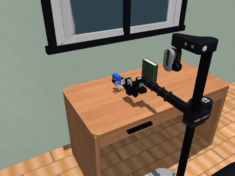
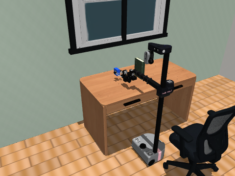
原任务为 27 秒。两段 GIF 均抽取 15 帧，以约 3.75 秒快放，不代表真实执行速度；480×360 原始分辨率。点击图片也可打开动图。此案例早于下方 MG 批次。
当前为明确出力与摩擦假设下的仿真任务；由专家控制器驱动，不是学习策略或双臂协作演示。原家具与自由书保留，蓝色物体是新增测试目标。证据 →
把一次成功扩展到一组事先确定的变化条件。
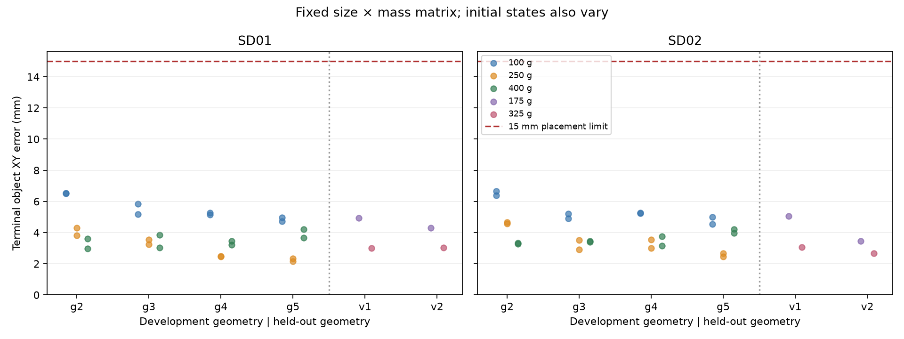
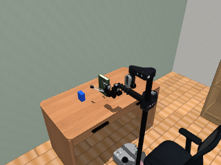
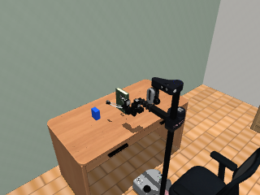
两个布局复用原有 5 个资产和同一任务桌面，主要改变窗墙与背景，不是新的语义房型。MG 开发质量为 100 / 250 / 400 g，隔离验证为 175 / 325 g，并采用其他验证尺寸。
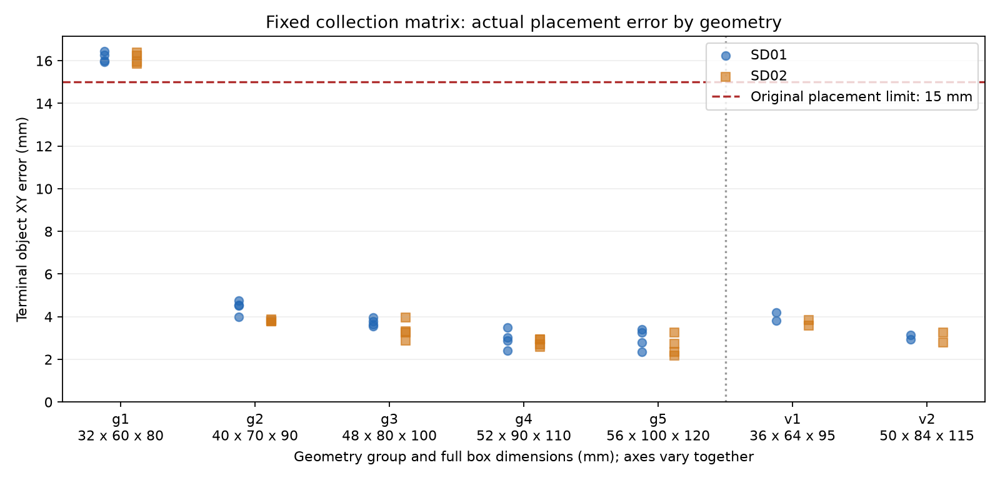
MG 含静态准备共 4,971.789 服务秒；103.579 秒/条不包含全部开发或人工时间，也不与历史 Panda 批次直接比较。资产、任务桌面与控制器仍有限，小批成功不代表持续量产或真实硬件能力。MG 证据 · D 证据 · F 复验
把成功操作整理成能直接读取、来源清楚的训练材料。
391,500 条状态与动作转移
24,840 时刻 · 每条 27 秒
| 来源 | 成功开发轨迹 | 其中完整 RGB-D | 范围 |
|---|---|---|---|
| 参考环境 C | 45 | 6 | 参考任务的开发来源 |
| 自有书房 H | 20 | 6 | 事先声明的书房开发任务 |
| 几何批次 D | 32 | 32 | 仅计成功开发，失败和验证隔离 |
| 尺寸 × 质量 MG | 48 | 48 | 新增开发来源，8 验证不计入 |
| 合计 | 145 | 92 | 92 是 145 的子集，不能相加 |
腕部 RGB-D 为 10 Hz，机器人状态与动作为 100 Hz。每个图像时刻配 10 步原生动作参考；完整子集含 248,400 步对齐动作。官方格式和精确深度绑定均已实际读取。
下载汇报摘要 JSON（不是训练数据） ↓早期 D 批次的 32 条序列已生成无损副本，表示体积减少 67.66%，数值、类型和属性保持一致。原文件全部保留，因此这不是已释放的磁盘空间，也不增加样本数。
这些是明确仿真假设下可供研究训练的数据。五个动作通道仍恒定，图像深度与相机配准理想化；读取通过不自动证明学习收益、稳定量产或真机迁移。9 月 28 日新模型未增加轨迹数。交付证据 · 无损副本
先检验机器人能否更准确地判断物体在哪里。
后续视觉初始化任务：专家 4/4 成功；单尺寸组 0 成功 / 3 失败 / 9 未运行，多尺寸组 2 成功 / 1 失败 / 9 未运行。累计三次超过接触力门的情况触发停止，剩余 18 次未运行，仅第一采样种子实际执行。
这是初始视觉估计加脚本控制器，不是端到端学习动作策略；不能把 22/24 写成取放成功率。
模型权重在读取验证观察前冻结。该实验支持限定感知基线的数据价值；完整任务、未见房型与实机收益待证。定位证据 · 后续任务限制
检验更多重量的数据，能不能帮助模型预测动作后的变化。
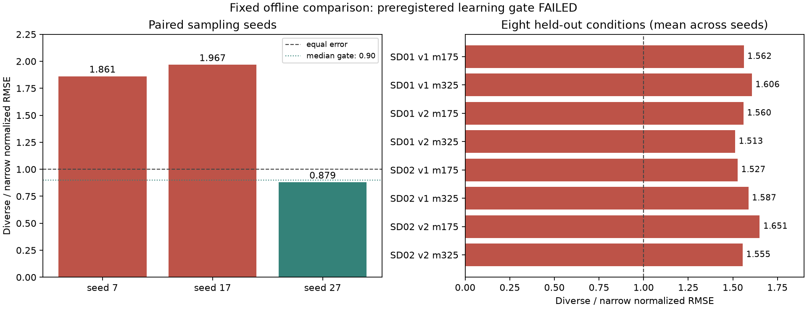
独立审计重新加载冻结权重，复现全部 72 组模型与基线评估，没有再次拟合。每模型采样量一致，开发/验证隔离检查通过；实验执行完成与科学目标未通过分别记录。
当前数据与固定线性一步预测方案没有证明多质量收益。它不证明多质量数据普遍有害，也没有确定唯一原因。模型只预测速度变化，不能直接驱动机器人动作。
固定分支已按预设标准收束，不重拟合或改门；下一独立任务检验尚未准入。无新物理、图像或轨迹，145 / 92 交付保持。完整证据 →
以下保留较早阶段的原始成果。日期、机器人和统计标准与当前 Stretch 主线不同；历史数量不与上方 145 条相加。
先搭好机器人工作的环境。
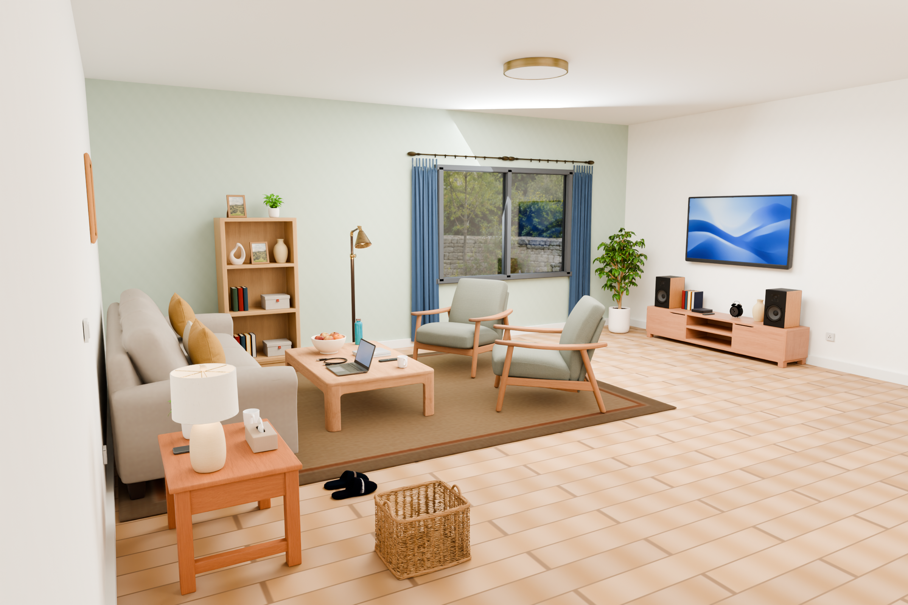
RGB 外观：同一最终场景的原生渲染。点击查看原图。
能说明：已完成复杂室内装配、多视角观察与静态检查。范围：经过工程修订的一个案例；窗外为二维背景，物性与任意新场景的可用性不能由此推断。证据 →
让机器人在仿真环境里完成实际动作。
能说明：场景已接入机器人任务执行与状态回放。这组展示使用专家控制，可访问任务真值，不属于学习策略泛化结果。证据 →
把一次成功操作，变成能读取、能执行的数据。
固定 book_05—desk，保持朝向平移 0.10 m。17.5 秒、九个阶段全部完成，保存控制的独立回放一致；随后构建全程观察与动作块数据，并经真实消费接口重新执行，与源记录一致。
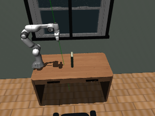
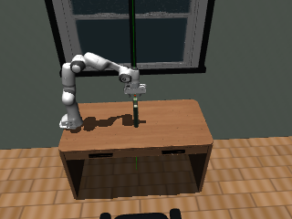
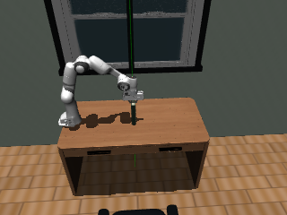
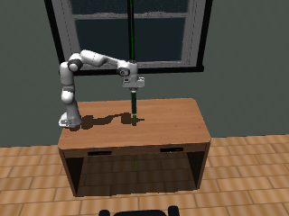
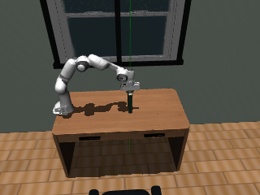
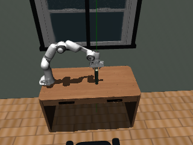
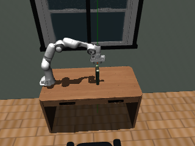
横向浏览九阶段与末态的 10 张原始预览；不是完整视频。图像维持原始 320×240 分辨率。
约 32.805 MiB 的 HDF5 开发包；RGB、本体状态、时间、动作与下一观察已逐值读回。O01 的 8 项软件检查与 13 项加载核验通过；C01 另有 13 项软件检查与 11 项加载核验，并完成真实消费回归。
下载汇报数据摘要（JSON） ↓目标最少仅 134 像素，约占画面 0.1745%，学习细节是否足够未知。仅 1 个同源组合；独立组合、视觉学习闭环和学习效果尚未验证。
O01 开发包 1 份；C01 未新增数据，生产资格仍为 0。能说明：固定案例已贯通“生成产物 → 成功仿真 → 图像 → 数据导出/读取 → 真实动作消费”。C01 无新渲染或策略前向，不能称实时视觉闭环；生产资格继续拒绝。V01 证据 · O01 证据 · C01 证据
它们分别回答“能否连续产出示范”和“机器人能否从示范中学到动作”。两项实验分别开展：学习视频中的模型，并非用这 15 条试产数据训练得到。
先做一轮小批量生产演练。
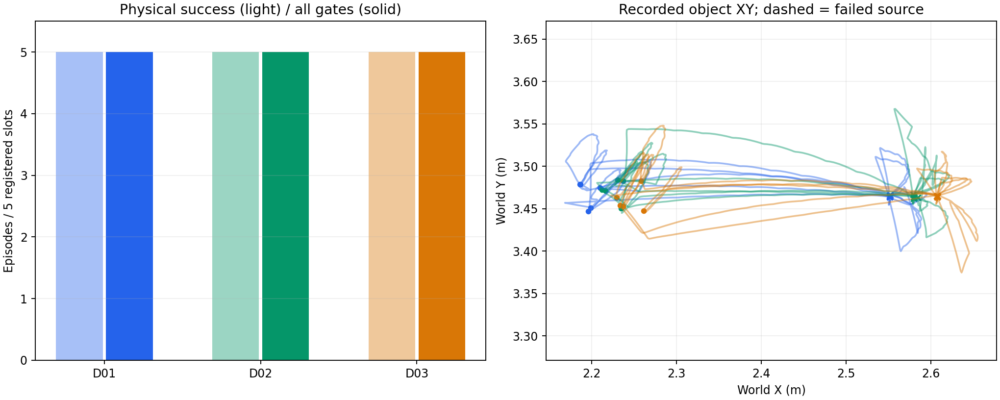
这批数据共包含 14,910 次动作转换，即带前后状态的一步步操作记录，合计 745.5 秒专家示范；官方 LeRobot 读取工具检查通过。
范围：同一书本、篮子与书房布局族，使用 2026-09-21 当时的验收标准。整体批次工程门因成本字段不全未通过，不能计为最新生产资格。证据 →
让 Panda 单臂从示范中学习，再尝试把书放进篮子。
在已有学习模型上增加对最近 5 次机器人状态的利用，改善释放与撤离动作；46.10 秒完成任务，末态水平误差 2.445 mm。下载视频 ↓
范围：机械臂使用自身状态，图像只影响夹爪；不是从零训练的完整视觉策略。后续另一项 ACT 小试仅 2/12 成功，未通过准入门。此处仅对应旧 Panda 分支；当前 Stretch 学习结果见上方。成功证据 · ACT 小试
以下是原始报告的汇报摘要。原始代码、模型、训练数据和服务器日志不随网页发布。文件标识用于在项目内追溯，完整复制素材的 SHA256 清单保留在本地交付目录。
最终目标不变。当前完成限定范围小批量交付和多种学习检验，MD 固定预测门未通过。下一步先补齐部署可用观察与动作控制方案，冻结新的独立任务检验；不自动重开失败分支。
scene/docs/EMBODIED_DATA_ROADMAP_20260926.mdscene/docs/EMBODIED_LONG_RUN_HANDOFF_20260926.mdscene/docs/ARCHITECTURE.md64 件物体、6 个高清视角、深度与实例标签，40 组支撑检查。静态工程案例，窗外为二维背景；不代表任意场景的全自动物理可用性。
scene_runs/codex_trellis_v2/scene_reliability_20260914_v1/living_room/REPORT.mdStretch2 导航和 Panda 抓放由规划器/专家控制器驱动。展示视频来自已保存状态，没有为本次网页新增仿真实验。
scene_runs/codex_trellis_v2/scene_reliability_20260914_v1/simulation/REPORT.mdscene_runs/codex_trellis_v2/embodied_phase1_20260913_v1/REPORT.md3 配置 × 5 名额，15 条通过当时物理、回放、观察和官方读取验收；14,910 次转换。成本完整性门失败，配置同源，不能计为最新生产资格或独立场景泛化。
scene_runs/codex_trellis_v2/embodied_production_pilot_20260921_v1/REPORT.md既有机械臂/视觉夹爪与新增 5 帧本体历史残差组合，46.10 秒完成任务。机械臂仅用本体，视觉影响夹爪；不代表从零学习、未见泛化或视觉机械臂收益。
scene_runs/codex_trellis_v2/embodied_release_history_20260921_v1/REPORT.md9 条示范，2 个种子各 20,000 更新；12 次实际执行中成功 2 次，12 次独立回放通过。小试准入门失败，不能推广为 ACT 方法整体无效。
scene_runs/codex_trellis_v2/embodied_reference_act_20260922_v1/REPORT.md补充解析目标速度参考，固定 book_05—desk 完成 17.5 秒九阶段任务；终态水平误差 4.71536 mm，抬升 148.443 mm，17,500 步独立回放状态与接触误差为 0。
scene_runs/codex_trellis_v2/embodied_velocity_reference_20260924_v1/REPORT.md351/351 帧通过固定可见性门；350 个 50×15 动作块逐值读回，HDF5 约 32.805 MiB。O01 交付 1 个开发包、0 个生产合格训练 episode；后续真实消费已由 C01 验证，学习与独立组合仍待验证。
scene_runs/codex_trellis_v2/embodied_temporal_dataset_20260924_v1/REPORT.mdscene_runs/codex_trellis_v2/embodied_temporal_dataset_20260924_v1/RESULT.jsonscene_runs/codex_trellis_v2/embodied_temporal_dataset_20260924_v1/NEXT_STEP.md真实读取 O01 的 350 个动作块，通过新适配器和原控制器完成 17,500 步原生积分；控制、状态、接触及块边界本体状态/时间的最大比较误差均为 0。单例开发接口闭合；无新渲染、策略前向或训练，新开发包/合格训练 episode 均为 0。
scene_runs/codex_trellis_v2/embodied_block_consumer_20260924_v1/REPORT.mdscene_runs/codex_trellis_v2/embodied_block_consumer_20260924_v1/RESULT.jsonscene_runs/codex_trellis_v2/embodied_block_consumer_20260924_v1/NEXT_STEP.md自有书房 H 的 20/20 开发任务成功；展示是 household_301 已保存状态的 15 帧抽帧动图，约 3.75 秒播放 27 秒过程，0 新物理。单臂专家控制的刚体取放，不是双臂或视觉策略成功。
scene_runs/codex_trellis_v2/embodied_stretch_ai_admission_20260926_v1/capability_household/protocol/PROTOCOL.jsonscene/docs/EMBODIED_LONG_RUN_PROGRESS_20260926.mdscene_runs/codex_trellis_v2/embodied_stretch_ai_admission_20260926_v1/tools/render_capability_household_corrected.py两布局由公共生成器产出，复用 5 资产与同一任务桌面，主要窗墙/背景变化。几何 D 开发 32/40、验证 8/8，最小 g1 的 8 次失败保留，原整批产量门未通过。
scene_runs/codex_trellis_v2/embodied_stretch_ai_admission_20260926_v1/capability_scene_diversity/RESULT.jsonscene_runs/codex_trellis_v2/embodied_stretch_ai_admission_20260926_v1/capability_geometry_collection/RESULT.json开发 48/48、验证 8/8，0 失败/未运行，756,000 积分步。48 开发为两布局×四尺寸×100/250/400g×两初态，验证含其他尺寸与 175/325g。末态水平误差 2.158–6.656mm；批次产量门通过。含准备约 103.579 服务秒/新增完整开发 RGB-D。仍是有限假设下的仿真研究。
scene_runs/codex_trellis_v2/embodied_stretch_ai_admission_20260926_v1/capability_mass_geometry/RESULT.jsonscene_runs/codex_trellis_v2/embodied_stretch_ai_admission_20260926_v1/capability_mass_geometry/CAPABILITY_BY_MASS_GEOMETRY.jsonscene/docs/EMBODIED_CAPABILITY_RESULTS_20260926.md145 条成功开发轨迹、391,500 条 100Hz 状态动作转移；其中 92 条完整 27 秒腕部 RGB-D，共 24,840 个 10Hz 时刻及 248,400 对齐动作步。官方与真实 Torch 全量读取及 7 拒绝通过。92 是 145 子集，验证/失败/评价/副本不计入。5 动作通道恒定，无量产或硬件资格。
scene_runs/codex_trellis_v2/embodied_stretch_ai_admission_20260926_v1/capability_mass_geometry/training_bundle/RESULT.jsonscene/docs/EMBODIED_TRAINING_DATA_20260927.md固定九特征岭回归，每模型 1,200 帧，三采样种子×八验证条件；单尺寸 3/24，多尺寸 22/24。XY 范数≤10mm 且 |Z|≤10mm 才通过。权重在验证前冻结；只支持此条件化感知基线的数据价值，不是完整任务学习。
scene_runs/codex_trellis_v2/embodied_stretch_ai_admission_20260926_v1/capability_geometry_perception/RESULT.jsonscene/docs/EMBODIED_CAPABILITY_RESULTS_20260926.md专家 4/4；窄组 0 成功/3 失败/9 未运行，多尺寸 2 成功/1 失败/9 未运行。累计三次物理无效后关闭，剩 18 次不补跑，仅 seed7 实际执行。一次初始视觉估计加脚本控制，未证明三种子完整任务收益。
scene_runs/codex_trellis_v2/embodied_stretch_ai_admission_20260926_v1/capability_geometry_visual_task/RESULT.jsong2–g5 两布局，每格三新初态，共 24/24 成功；全部评价，不进入训练目录。支持固定成功范围的重复性，不证明 95% 广域可靠率、新房型或硬件资格。
scene_runs/codex_trellis_v2/embodied_stretch_ai_admission_20260926_v1/capability_geometry_confirmation/RESULT.json32 条 HDF5 从 2,248,430,526B 压缩至 727,202,757B，交付表示减少 67.66%；值/类型/形状/属性与原生读取均一致。原件保留，因此不是已释放磁盘，也不增加样本数。
scene_runs/codex_trellis_v2/embodied_stretch_ai_admission_20260926_v1/capability_lossless_storage/RESULT.json单质量 16 源对多质量 48 源，同布局×几何、每模型 2,400 窗口，三对模型；预测下一 10ms 速度增量。误差比分别 1.860885、1.967214、0.878913，中位 1.860885，只有 1/3 对改善，三对平均 0/8 条件改善，固定门未通过。独立审计重现 72 组结果，0 再拟合。固定分支关闭；不证明多质量数据普遍有害，无新轨迹或任务成功。
scene_runs/codex_trellis_v2/embodied_stretch_ai_admission_20260926_v1/capability_mass_dynamics_probe/REPORT.mdscene_runs/codex_trellis_v2/embodied_stretch_ai_admission_20260926_v1/capability_mass_dynamics_probe/RESULT.jsonscene_runs/codex_trellis_v2/embodied_stretch_ai_admission_20260926_v1/capability_mass_dynamics_probe/evidence/AUDIT.jsonscene_runs/codex_trellis_v2/embodied_stretch_ai_admission_20260926_v1/capability_mass_dynamics_probe/NEXT_TASK_ADMISSION.md先做好高质量训练数据，再在同一场景与任务体系上加入严格隔离的测试和标准化评测。
项目先把可用于具身策略学习的高质量训练数据做好，再基于同一套场景、任务与接口建立隔离测试集、评测任务和固定指标，最终形成可训练、可测试、可持续改进的完整系统。
391,500 条状态与动作转移
24,840 时刻；包含在 145 条中
48 开发 + 8 验证，固定批次通过
六模型对照未通过预设学习门
固定定位模型受益于多尺寸数据；最新多质量一步预测没有通过。可用研究数据、学习价值与稳定量产分别判断。查看最新负结果 →
按证据逐项判断。尚未设定的量产数值目标保留待定，不用完成百分比代替验证。
| 指标 | 达成标准 | 当前证据 | 状态与差距 |
|---|---|---|---|
| 场景与任务 | 生成可执行的环境，机器人能够完成任务。 | 已有室内场景与历史 Panda 案例；当前 Stretch 单臂移动操作接入自有书房，20/20 任务成功，并完成两个生成布局的后续采集。[room] [stretch] [geometry] | 限定任务已执行 当前以单臂刚体取放为主；未形成双臂协作、新语义房型或通用关节任务能力。 |
| 物理与观察质量 | 几何、接触、稳定性与观察按固定标准验收。 | 最新 MG 56 次任务全部通过；151,200 条状态/动作记录审计通过，末态水平误差 2.158–6.656 mm。[mass] [visualtask] | 限定仿真范围通过 出力、轮摩擦与相机配准仍有理想假设；早期小尺寸失败和视觉触桌问题保留，无真机验证。 |
| 数据格式与消费 | 状态、图像、动作和时间对齐，并能被下游正确读取。 | 145 条成功开发轨迹，其中 92 条完整腕部 RGB-D；官方格式与真实 Torch 读取通过，24,840 个观测时刻逐值/类型核验。[training] | 研究训练入口已交付 RGB/动作沿用官方读取，精确深度通过绑定 HDF5 接入；仍需按本机器人动作单位和通道适配学习器。 |
| 有效多样性 | 覆盖任务相关的物体、接触、布局与环境变化。 | MG 开发为 2 布局×4 尺寸×3 质量×2 初态，48 条；另有 8 条隔离验证，包含其他尺寸与质量。[geometry] [mass] | 尺寸与质量覆盖扩展 布局复用资产和任务桌面，主要改变背景；新物体身份、接触几何、支撑面和任务类别仍不足。 |
| 合格产量与稳定性 | 按固定名额重复产出，保留成功、失败与未运行分母。 | 统一目录 145 条成功开发来源；MG 开发 48/48、验证 8/8，批次产量门通过；先前成功范围复验 24/24。[training] [mass] [confirmation] | 固定范围小批量通过 145 条属于限定条件的研究数据；单批通过不等于持续量产。D 的 8 次失败和原批次未通过结论保留。 |
| 单位成本 | 每条数据的实验时间和存储成本可追溯。 | MG 含静态准备共 4,971.789 服务秒，约 103.579 秒/新增完整 RGB-D 开发来源；阶段文件约 4.28 GiB。[mass] [storage] | 批次成本已有记录 服务秒不包含全部开发、对话和人工时间；与历史 Panda 批次口径不同，不直接比较提速。 |
| 人工介入 | 队列能够检查、恢复，并记录故障与人工干预。 | 固定队列、失败停止、来源去重、开发/验证隔离和数据审计已复用；7 类不合格输入拒绝检查通过。[training] [mass] | 有限流程可复用 新任务设计、控制适配和范围判断仍需工程工作；长期自动恢复、质量漂移和人工工时待验收。 |
| 训练与测试效果 | 先按固定预算完成训练，再在严格隔离的测试条件下证明数据的实际价值。 | 定位：单尺寸 3/24、多尺寸 22/24；最新一步预测：仅 1/3 对改善，配对误差比中位 1.861，未通过预设门。[perception] [visualtask] [dynamics] | 局部收益与负结果并存 定位改善不等于完整取放成功；视觉任务未通过，最新预测器不输出动作，完整任务测试、泛化收益和实机迁移仍待证明。 |
口径说明：145 条是当前统一目录的成功开发来源，92 条完整 RGB-D 是其中子集。验证、失败、评价和压缩副本不计入；旧 Panda 的 15 条试产不并入本统计。查看证据索引 ↓
自己的场景生成器是主线。采集器先产出训练示范；学习器完成训练后，再到未见条件和固定任务上接受测试。
文本 / 图像 → 结构化需求 → 资产 → 布局 → 修复 → 装配
已有场景与两布局参考机器人与专家控制器 → 固定任务 → 接触与稳定性验收
限定条件批次通过同步记录 → 审计 → 官方导出 → 统一读取 → 来源隔离
145 / 92 研究数据固定算法与训练预算 → 隔离测试集与任务 → 完整任务指标
局部对照已有，完整测试待建扩大有效分布；训练/测试隔离；持续吞吐、质量漂移与完整成本
训练—测试闭环尚未验证质量失败 → 定位与最小修复；隔离测试暴露的薄弱点 → 决定下一批生成什么。后半条反馈链仍是后续计划。
用规划器、专家控制器或示范扩增，驱动机器人完成动作，同步保存图像、机器人状态、动作和时间，再做质量检查。
采数据不要求每个新场景都先训练出一个成功策略。
先固定算法与训练预算完成学习，再用未进入训练的场景、物体或任务比较能力变化。当前已检验物体定位和一步状态预测；完整动作策略的任务成功率是更进一步的测试。
训练数据上的成功，不能代替隔离测试中的完整任务成功。
MG 尺寸×质量批次 56/56 成功，统一目录已有 145 条成功开发来源、其中 92 条完整腕部 RGB-D。采集、审计和实际训练读取已有可复用结果。
多尺寸定位对照有改善；今天完成的六模型一步预测对照未通过。该预测分支已收束，下一任务检验尚未准入，先补齐可执行的动作接口与独立新条件。
下一步怎么做 →底盘、升降机构、伸缩机械臂和夹爪共同执行刚体取放。历史 Panda 抓放属于另一平台；现有数据不代表双臂协作成果，双臂尚无排定的任务里程碑。
训练数据是一段带时间顺序的交互记录。当前完整序列每条 27 秒，以 10 Hz 记录腕部 RGB-D，以 100 Hz 记录机器人状态与动作；每个图像时刻对应 10 步动作。展示视频或动图不能代替这些标签。
145 条成功开发轨迹、391,500 条状态动作转移。其中 92 条具备完整腕部 RGB-D，共 24,840 个时刻。RGB 为 256×192，深度单位为米，并带有效像素掩码和相机参数。
RGB 和动作采用官方 LeRobot 读取，精确深度通过绑定的 HDF5 接入；统一数据读取器支持 Torch DataLoader。动作是 10 个原生执行器参考量，各通道单位明确，不能直接当作任意归一化动作。LeRobot 格式文档 ↗
默认读取隔离物体真值和质量等特权信息；失败、验证和重复副本不能混入训练。五个动作通道在当前任务中恒定，深度与相机配准仍有理想假设。当前交付证据 →
按完成条件推进，不承诺未经验证的日程。每一步都对应数据生产瓶颈，并设预算和退出条件。
本页保留当时的计划。当前全身机器人主线请查看 10 月 14 日路线调整 →
先弄清机器人能用哪些信息决定动作，再设计新的独立任务检验。
9 月 28 日固定六模型一步预测对照已完成且未过门。保留六模型、全部误差与负结果，不挑最好种子、不改门、不在原八条验证上继续选模型；失败原因尚未被唯一确定。
明确腕部 RGB-D、编码器和动作历史如何输入，控制模块如何输出有限动作并实际执行；隔离物体真值、质量标签等特权信息。当前预测器没有动作选择接口，下一任务检验仍未准入。
优先新接触几何、支撑面和有效工作空间。先明确开发范围、独立新条件、成功标准和完整预算，再决定新实验；新方案不是已准备好可立即运行的整包。
交付标准：可审查的控制/观测接口、开发准入证据、独立任务矩阵和完整资源方案。现有 145 / 92 数据入口继续可用；本次网页更新不启动实验。
在更多真实有区别的场景和任务中稳定采数据，并证明机器人用这些数据能做得更好。
把新物体身份、不同支撑、操作空间和任务类型纳入覆盖；保持开发与未见测试来源隔离，避免只增加相似背景或重复轨迹。
串联生成、采集、质检、导出和恢复，持续记录合格率、吞吐、质量漂移、单位成本与人工介入；固定批次成功是起点，持续量产需要单独验证。
用固定学习器和预算检验完整任务成功率，再规划硬件验证。当前主线为 Stretch 单臂；双臂协作若纳入目标，需要明确任务、控制接口和验收，尚未排定具体里程碑。
交付标准：更广的有效覆盖、持续合格产量和可复现的独立任务收益。数值门槛在对应试验开始前明确，不外推现有小批结果。
让系统知道什么数据有用、哪里容易失败，从而少做无效采集。
由碰撞、遮挡、不可达或执行失败定位原因，只修必要部分；与直接丢弃、通用修复和等预算重生成比较。现有简单预警并未获得通用有效性证明。
围绕实际接触区域决定几何精度与检查预算，记录物性不确定性；研究哪些简化仍能保持任务和数据质量。
研究如何根据独立任务薄弱点选择新物体、支撑与动作条件。最新负结果提醒：增加参数多样性未必改善固定模型，需要以任务收益检验。
这些仍是候选研究方向，未证明新颖性或效果；需要文献定位、消融实验、等预算比较和明确退出条件。
新的控制方案，能否用部署时可获得的信息决定动作？
增加的是任务相关变化，还是只有背景不同？
这些数据能否改善独立条件下的完整任务成功率？
我们已有限定范围的批量数据与学习对照。仍需扩大任务覆盖，检验完整任务价值和持续生产能力。
相关工作沿用 2026-09-24 的文献核对快照，本次仅将我们的结果同步到 2026-09-28，未重新检索新论文。本项目未统一复现这些工作。不同任务、硬件和评测协议下的数字不作直接排名，所列工作也并非穷尽。
| 工作 / 原始来源 | 首次预印本日期 | 为何纳入比较 |
|---|---|---|
| SAGE ↗ | 修订 2026-02-20 | 任务驱动的场景生成与学习 生成器与评审器迭代，提供 SAGE-10k，并报告未见物体和布局上的策略泛化。 |
| SceneSmith ↗ | 修订 2026-05-30 | 密集室内场景与物理可用性 分层生成家具与小物体，结合关节资产检索、物性估计和机器人策略评测。 |
| RoboCasa365 ↗ | 首发版本 | 丰富任务与学习基准 365 项任务、2,500 个厨房环境，并提供人类与合成示范及系统学习评测。 |
| EmbodiedGen V2 ↗ | 修订 2026-08-18 | 可执行任务世界与迁移 连接资产、交互信息、任务与多房间环境，报告下游强化学习和实机迁移实验。 |
| RoboCousin ↗ | 本次检索中较新的相关工作 | 观测到资产与规模化示范 论文报告 3,000+ 物体、50 项任务、百万级专家轨迹；代码与数据发布完整性未在本项目复验。 |
| RoboTwin 2.0 ↗ | 修订 2025-08-27 | 双臂任务、示范与环境随机化 731 个物体、50 项任务、5 类机器人，结合专家生成与多维环境随机化。 |
| ManiSkill3 ↗ | 修订 2025-05-30；平台持续维护 | 仿真吞吐与学习基础设施 提供 GPU 并行仿真、渲染、异构场景和学习基线；用于参考基础设施，而非直接比较生成质量。 |
| 比较点 | 我们的已达部分 | 相关工作提供的参照 | 仍需补齐 |
|---|---|---|---|
| 生成场景生成链路 | 有限成果 已有自有生成器和完整场景接入；新生成两布局用于后续任务。 |
SAGE / SceneSmith 已有任务驱动、密集场景与更广覆盖评测。 | 需要统一请求集上的生成质量、成功率与新房型评测。 |
| 生成资产与交互能力 | 有限成果 Stretch 单臂刚体取放已有尺寸×质量实验。 |
SceneSmith / RoboCousin 提供关节资产或可操作接触标注。 | 缺新物体身份、通用开合任务与双臂协作验证；参数变化不等于新资产。 |
| 生成任务与有效多样性 | 有限成果 MG 48 开发条件与 8 验证条件，覆盖尺寸、质量和初态。 |
RoboCasa365 / RoboTwin 2.0 覆盖更丰富任务、环境和机器人。 | 仍复用任务桌面和资产；布局主要背景变化，任务种类与接触分布较窄。 |
| 质量物理可靠性 | 有限成果 MG 56/56 成功，先前成功范围 F 24/24 复验通过。 |
SceneSmith / EmbodiedGen V2 报告规模化稳定性或下游可用性评测。 | 假设物性与出力未硬件标定；旧 D/W 失败保留，小样本不保证广域可靠率。 |
| 质量全程视觉可用性 | 有限成果 92 条完整腕部 RGB-D、24,840 时刻；已有固定定位模型对照。 |
SAGE / RoboCasa365 在视觉策略训练与评测中检验观察价值。 | 理想深度/相机配准假设保留；定位通过仍未转化为可靠视觉取放。 |
| 质量质量证据与拒绝机制 | 有限成果 有轨迹全量审计、来源绑定、隔离与 7 类实际拒绝验证。 |
SAGE / SceneSmith 包含语义、视觉或物理评审环节。 | 已有局部预警未通过后继检验；尚未证明通用诊断规律或方法优势。 |
| 数据自动采集与格式 | 有限成果 145 成功开发来源；92 完整 RGB-D，官方读取和 Torch 全量核验通过。 |
RoboTwin 2.0 / RoboCousin 提供可复用示范生成流水线。 | 需更广任务的采集适配、部署可用观察和动作学习接口。 |
| 数据规模与运行效率 | 有限成果 固定 56 条批次完成；约 103.579 服务秒/新增完整开发 RGB-D。 |
RoboCousin / ManiSkill3 分别参考数据规模与并行仿真能力。 | 仍缺大规模持续吞吐、质量漂移及人工工时实测；不同任务不作效率排名。 |
| 学习学习收益与泛化 | 有限成果 等量定位 3/24→22/24；新多质量一步预测比较未过门。 |
SAGE / RoboCasa365 / RoboTwin 2.0 有数据规模、多样性或迁移收益实验。 | 当前收益是固定感知基线；完整任务、独立新场景与动作策略价值待证。 |
| 学习实机迁移 | 仍有缺口 已有明确仿真假设下的研究数据；尚无实机验证结论。 |
EmbodiedGen V2 / RoboCousin / RoboTwin 2.0 论文报告现实机器人实验。 | 需补齐执行器与传感器依据、部署观察和可靠任务基线后验证迁移。 |
| 研究创新主张 | 仍有缺口 质量审计、失败记录与数据对照形成了研究基础，也保留了负结果。 |
SAGE / SceneSmith 相关工作已有评审、迭代和自修复机制。 | 需明确新方法、消融及等预算对照；工程完整性不直接等于研究创新。 |
共 11 个比较点。所有状态仅对应已记录证据。
直白地说：现在已能在限定条件下完成小批量采集和交付；部分定位学习受益，但最新预测对照未通过。更广任务的可靠性、完整任务收益和持续量产仍待验证。